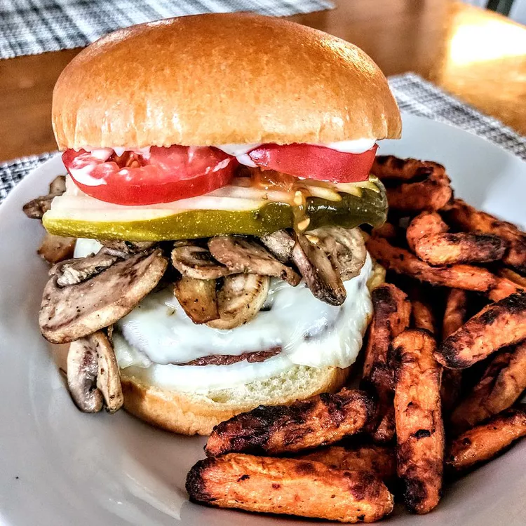

How you can learn to love the grease (Fatboy Burger recipe)
Home

Picture this: a sweltering summer afternoon, the kind that makes you question your life choices while standing
in front of a sizzling grill. I was deep in the heart of a legendary burger cook-off in the middle of Texas,
where the air was thick with the aroma of smoky meat and the sound of laughter echoed through the fields.
As I flipped patties, a figure emerged from the haze of barbecue smoke—none other than Anthony Bourdain himself!
We locked eyes, and in that moment, it was as if the culinary gods had conspired to bring us together.
With a wink and a grin, he challenged me to create the ultimate burger—a Fatboy Burger that would be talked about for generations.
Armed with a secret blend of spices, a mountain of toppings, and a heart full of dreams, we crafted a burger so magnificent that it practically sang!
As the sun dipped below the horizon and the crowd roared in approval, the Fatboy Burger was born, destined to be the stuff of legends.
Ingredients
For the Burgers:
- 1 lb (450g) ground beef (80/20 for maximum juiciness)
- 1 teaspoon garlic powder
- 1 teaspoon onion powder
- 1 teaspoon smoked paprika
- Salt and pepper to taste
- 4 slices of cheddar cheese (or your favorite cheese)
- 4 burger buns (preferably brioche for extra richness)
Toppings:
- Lettuce leaves
- Tomato slices
- Pickles
- Red onion slices
- Bacon (optional, but highly recommended!)
Special Sauce:
- 1/2 cup mayonnaise
- 2 tablespoons ketchup
- 1 tablespoon mustard
- 1 teaspoon Worcestershire sauce
- 1 teaspoon garlic powder
- Salt and pepper to taste
Cooking Instructions:
- Prepare the Special Sauce:
- In a small bowl, mix together the mayonnaise, ketchup, mustard, Worcestershire sauce, garlic powder, salt, and pepper. Adjust to taste, then set aside in the fridge to chill while you prepare the burgers.
- Make the Burger Patties:
- In a large bowl, combine the ground beef, garlic powder, onion powder, smoked paprika, salt, and pepper. Mix gently until just combined—don’t overwork the meat!
- Divide the mixture into four equal portions and shape them into patties, making a slight indentation in the center to prevent them from puffing up while cooking.
- Cook the Burgers:
- Preheat your grill or a skillet over medium-high heat.
- Cook the patties for about 4-5 minutes on one side. Flip them over, add a slice of cheese on top of each patty, and cook for an additional 3-4 minutes, or until the cheese is melted and the burger reaches your desired doneness.
- Toast the Buns:
- While the burgers are cooking, lightly toast the burger buns on the grill or in a toaster for added texture and flavor.
- Assemble the Fatboy Burgers:
- Spread a generous amount of the special sauce on the bottom half of each toasted bun.
- Place the cooked burger patty on top, followed by your choice of toppings: lettuce, tomato, pickles, red onion, and crispy bacon if you’re feeling indulgent.
- Top it off with the other half of the bun.